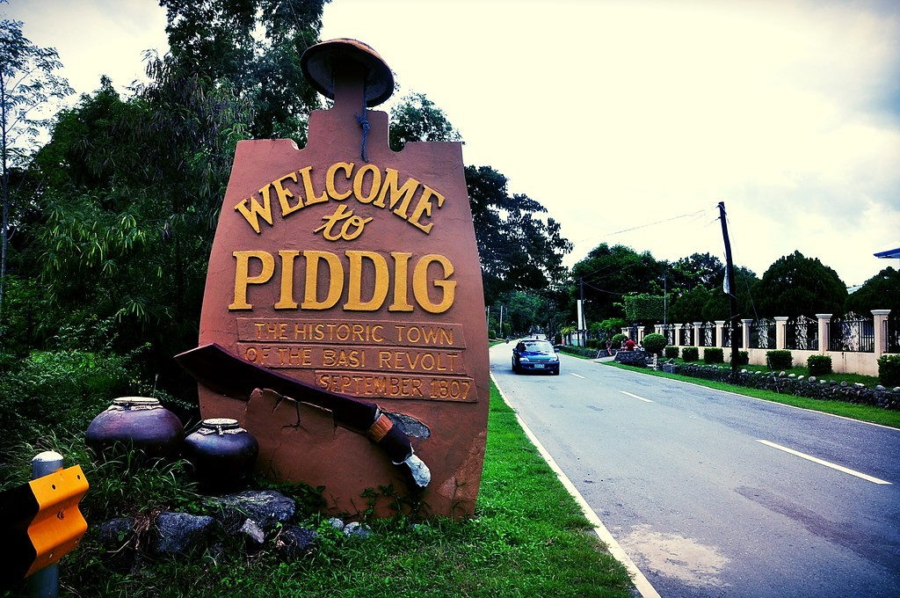

HISTORY OF PIDDIG, Piddig is a 3rd class municipality in the province of Ilocos Norte, Philippines. According to the latest census, it has a population of 20,304 people in 3,957 households.
The town is known for its place in the Basi Revolt, led by Pedro Mateo, a native of Piddig. Today, Piddig is known for the best basi in the Ilocos. It is also famous for their “sariwagwag”, a dish made out of gabi leaves with fresh shrimps that are freshly gathered from their rich river.
Piddig’s terrain is hilly with rice plains interspersed in between. It sits at a higher elevation than most of the towns in Ilocos Norte. It is a great place for a day hike, if one does not mind traversing through rivers, forests, and fields. The municipio (town hall) is located on top of a hill offering panoramic views of fields and mountains.
Almost each barrio or barangay in Piddig has its own elementary school. The town capital Anao, historically had two, Piddig Central (North) and South Piddig Central elementary schools. Astonishingly, both schools are situated next to each other north of town. Obviously, South Central is a stone’s throw south of Piddig Central. The schools’ rivalry is legendary. In the late 1980s the schools merged as one, Piddig Central. There are three high schools in Piddig: Don Salustiano Aquino Memorial National High School(Piddig National High School), Roosevelt High School, and St. Anne Academy (Catholic). However, many students attend high schools in nearby Laoag City.